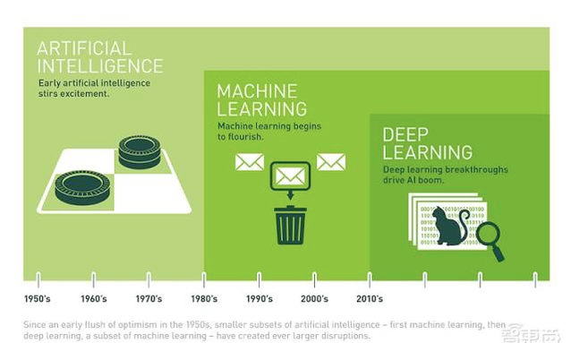
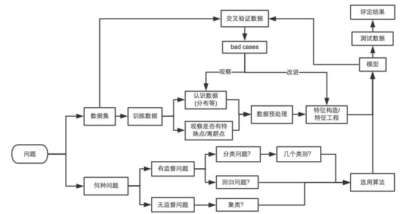

Introduce
进化历史

流程
- 数据清洗
- 特征工程
- 建模（选择一种或多种算法）
- 评价模型
图示
****

名词解释
- 监督学习
- Input 输入数据被称为训练数据，每条数据都有一个明确的标识或结果，如是否为垃圾邮件，是否为幸存者。监督式学习建立了一个学习过程，通过模型生成预测结果，将其训练数据实际结果进行比较，不断调整模型以期提高，到达预期准确率。
- 解决分类与回归问题。
- 无监督学习
- 数据不被标识，学习模型为了推断一些内在结构。
- 解决聚类、关联规则
- 半监督学习
- 回归
- 试图采用对误差的衡量来探索变量之间的关系的一类算法。
- 回归算法包括：
- 最小二乘法
- 逻辑回归
- 逐步式逻辑回归
- 多元自适应回归样条
- 本地散点平滑估计
- 分类
- 基于记忆的学习算法
- KNN（k-Nearest Neighbor）
- 学习矢量化（Learning Vector Quantization LVQ）
- 自组织映射算法（Self-Organizing Map， SOM）
- 正则化
- 正则化方法是其他算法（通常是回归算法）的延伸，根据算法的复杂度对算法进行调整。正则化方法通常对简单模型予以奖励而对复杂算法予以惩罚。常见的算法包括：Ridge Regression， Least Absolute Shrinkage and Selection Operator（LASSO），以及弹性网络（Elastic Net）。
- 机器学习
- 实际上就是寻找X 到 Y之间的一种对应关系 F，这种对应关系F 称之为一个模型；然而机器学习就是对很多个X 和 Y，通过对模型的训练，然后去发现这个最优的模型的过程。
- 深度学习
- 拟合
- 过拟合
- 是指训练好的模型F，对某些特征要求过于苛刻
- 欠拟合
- 与过拟合相反
- 梯度下降就是讨论解决问题（求损失函数最小）
- Just Fit
- 刚刚好
- 过拟合
特征工程
一维特征：只有一个自变量的关系式
**e.g. f\(衣服厚度\) = 温度 只有一个温度自变量**二维特征：
**e.g. f\(衣服厚度\) = 温度 + 风速 温度和风速两个自变量**
- 正则化
- 正则化则是探讨过拟合的问题（当然正则化还能改善ill-posed(condition)等问题
- 梯度下降GBDT
- ****
- 划分训练集和测试集
- 损失函数
- 平方损失
- 均方误差MSE
评价模型
WOE（Weight of Evidence）证据权重
****
GINI系数
- 混淆矩阵
- ROC曲线
- KS曲线
- KS（Kolmogorov-Smirnov）值
- 柯尔莫哥洛夫-斯米尔诺夫检验（Колмогоров-Смирнов检验）基于累计分布函数，用以检验两个经验分布是否不同或一个经验分布与另一个理想分布是否不同。
- KS值越大，表示模型能够将正、负客户区分开的程度越大。
- 绘制方式与ROC曲线略有相同，都要计算TPR和FPR。但是TPR和FPR都要做纵轴，横轴为把样本分成多少份。
- KS曲线是两条线，其横轴是阈值，纵轴是TPR与FPR。两条曲线之间之间相距最远的地方对应的阈值，就是最能划分模型的阈值。
- KS值即为Max(TPR-FPR)
流程
- 问题构建
- ****
数学基础
范数
- 范数是衡量某个向量空间（或矩阵）中的每个向量的长度或大小。范数的一般化定义：对实数p>=1， 范数定义如下：
公式
L1范数
- 当p=1时，是L1范数，其表示某个向量中所有元素绝对值的和。
- L2范数
- 当p=2时，是L2范数， 表示某个向量中所有元素平方和再开根， 也就是欧几里得距离公式。
- 拉普拉斯分布
- 高斯分布
| 算法 | 回归 | 分类 | 聚类 |
|---|---|---|---|
| Logistic Regression | 是 | ||
| Decision Tree | 是 | 是 | |
| CART（Classification And Regression Tree） | 是 | 是 | |
| ID3（Iterative Dichotomiser 3） | 是 | 是 | |
| C4.5 | 是 | 是 | |
| Chi-squared Automatic Interaction Detection(CHAID) | |||
| Random Forest | |||
| MARS(多元自适应回归样条) | |||
| Gradient Boosting Machine， GBM | |||
| 朴素贝叶斯 | |||
| 平均单依赖估计 Averaged One-Dependence Estimators | |||
| Bayesian Belief Network（BBN） | |||
| Support Vector Machine， SVM | |||
| 径向基函数（Radial Basis Function ，RBF) | |||
| 线性判别分析（Linear Discriminate Analysis ，LDA) | |||
| K-mean | 是 |
注解
在实际建模中需要重复特征工程、变量离散化、KS检验等步骤，不断优化以达到更优效果
****
****
****